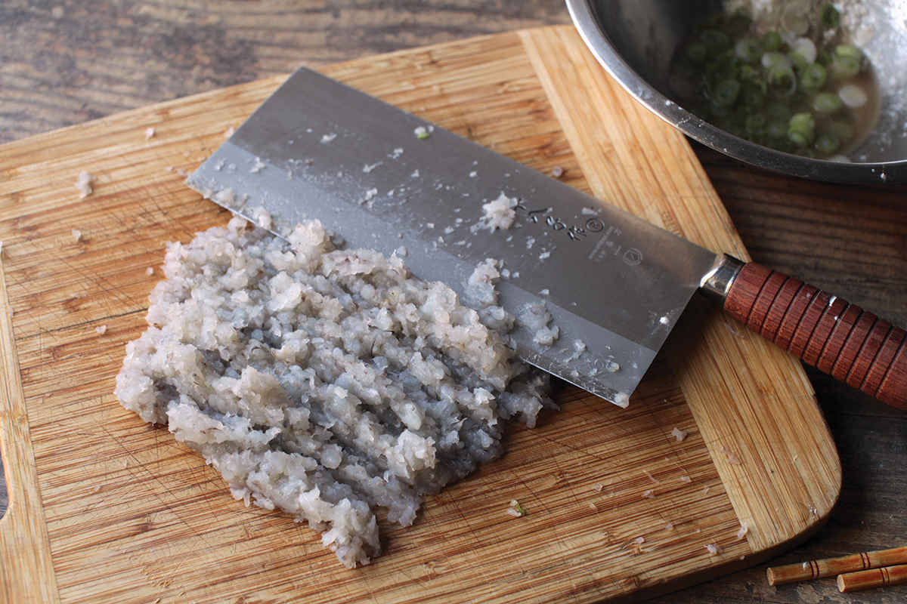
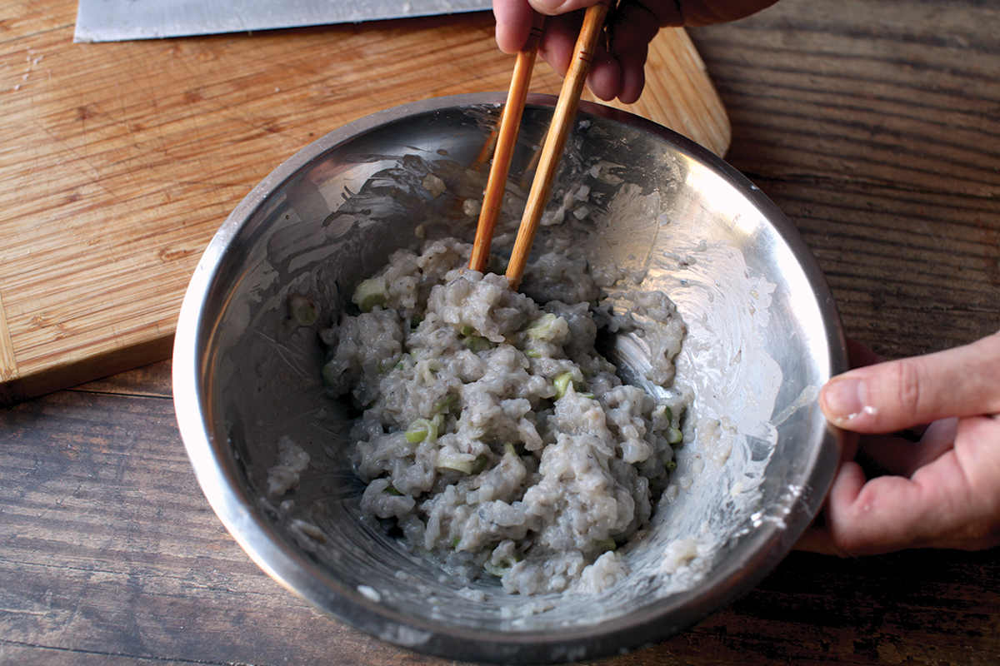
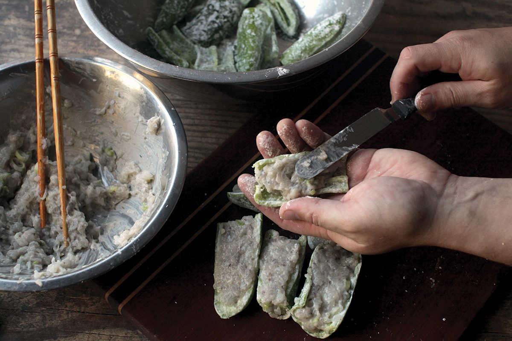
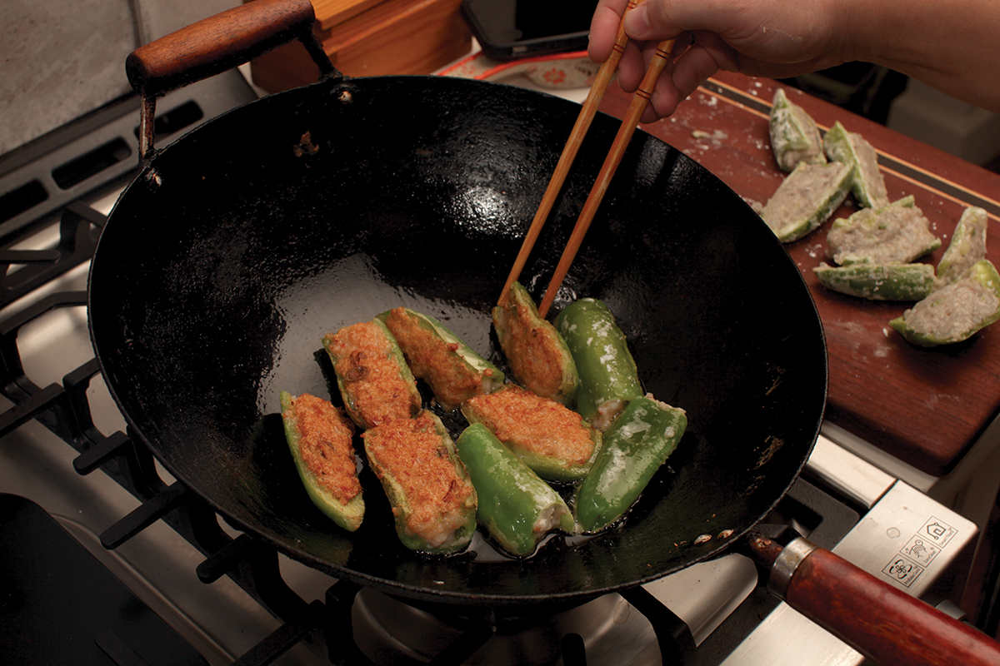

SHRIMP- OR FISH-STUFFED CHILES IN BLACK BEAN SAUCE
I grew up eating seafood-stuffed chiles in New York’s Chinatown. Long green chiles (I’ve seen them sold as “Green Capsicum” or “cowhorn” at Asian markets in the United States) would get split in half, filled with a seasoned emulsion of carp and shrimp, and panfried until golden brown. You could get it served dry with a little soy-based dipping sauce on the side (the Soy and Fragrant Oil Dipping Sauce on here would work well) or, as we preferred it, in a glossy, salty, fermented black bean sauce. Eating them was like a game of Russian roulette, as hiding among the generally mild chiles would be one or two bites with a fiery burn.
The dish originates from Shunde, at the cradle of the Pearl River Delta, in Guangdong province. Along with Chengdu, it’s one of two cities in China with a UNESCO City of Gastronomy designation. In the streets of Hong Kong, you can find it deep-fried and served by the piece on wooden skewers, along with eggplant and bitter melon stuffed with the same mixture (a combination known as “Three Stuffed Treasures”).




If you want to be very traditional, you’ll have to seek out fresh dace (a type of white-fleshed carp that you’ll have to carefully rid of its thin bones) and those long green peppers. At home, I typically make it with white-fleshed ocean fish like sea bass or hake or, more frequently, shrimp, which is inexpensive and produces a cohesive mixture that’s easy to work with. If you can’t find those long green peppers, any slender pepper will do—cubanelle if you want it mild or jalapeño if you like it hot (or a mix if you’re dining in mixed company).
The filling is made by finely mincing the shrimp or fish with a cleaver. I start by dicing it, then just go to town chopping the mixture on a cutting board, using the flat of the cleaver to fold it over itself until it forms a fine paste (a food processor makes short work of this as well). It’s then mixed with Shaoxing wine, cornstarch (which makes the mixture more tender), scallions, salt, sugar, and white pepper. The mixing step is really key here. Just like kneading dough or making sausage, the goal is to encourage proteins—mainly myosin—to cross-link, giving the mixture its characteristic bouncy, springy texture.
As you mix, you’ll see the mixture get stickier and stickier, eventually leaving a thin film of protein on the sides of the bowl. If you pick up a handful and hold it upside down in your open palm, it should stick to your hand.
To stuff the chiles, you start by splitting them in half lengthwise and rinsing them out under cool running water, removing all of the seeds and ribs. You then toss them in cornstarch (this ensures that the filling will stick to the moist surface and gives the outer surface a slick texture that helps sauce cling to it) and fill their cavity with the stuffing before panfrying them in a well-oiled wok. I start with the filling side down to brown and set it, then flip the chiles over and cook until the second side is brown and tender.